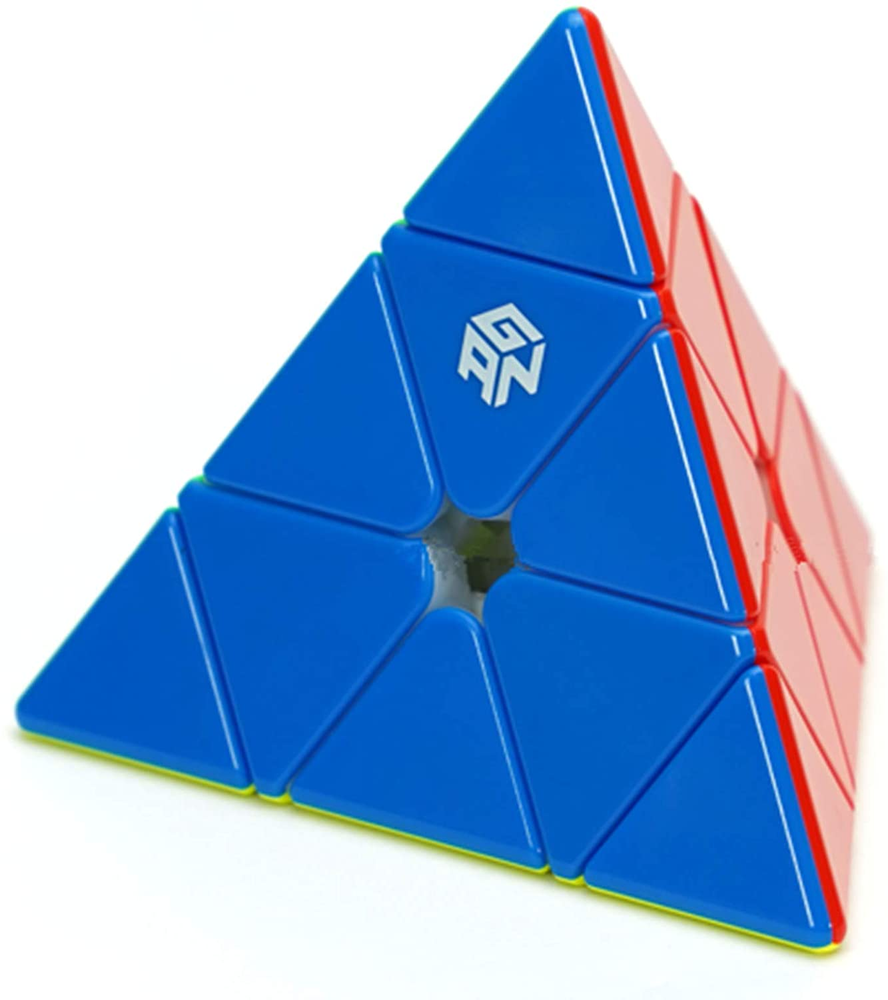
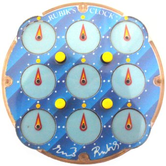

This puzzle is called a megaminx. Essentially, it's just the 3x3 cube on 12 sides, making it deceptively easy. The way you solve it is solving all the sides just like a regular 3x3, so for the most part, this puzzle is actually intuitive.
This puzzle is called a megaminx. Essentially, it's just the 3x3 cube on 12 sides, making it deceptively easy. The way you solve it is solving all the sides just like a regular 3x3, so for the most part, this puzzle is actually intuitive.
There are many, many puzzles out there, but what I will be covering is some of the common cubes that can officially have a world record for. In other words, all of these puzzles are officially recognized by the World Cube Association. There are a total of 11 puzzles, but I will be mentioning 4 unique ones.
A puzzle called a pyraminx is actually in the shape of a pyramid. It was originally invented by Uwe Mèffert in the 1970s, and then brought it to Hong Kong to mass produce it in 1981.
The skewb turns in a very unique way. It was originally invented by Tony Durham and was marketed by Uwe Mèffert. In december 2013, the World Cube Association recognized it as an official event.
This puzzle is called a megaminx. Essentially, it's just the 3x3 cube on 12 sides, making it deceptively easy. The way you solve it is solving all the sides just like a regular 3x3, so for the most part, this puzzle is actually intuitive.
 This is the only non-turnable puzzle recognized by the World Cube Association. To solve it, you turn the 4 dials on the corners and press the 4 yellow buttons to make the dials all point at 12:00.